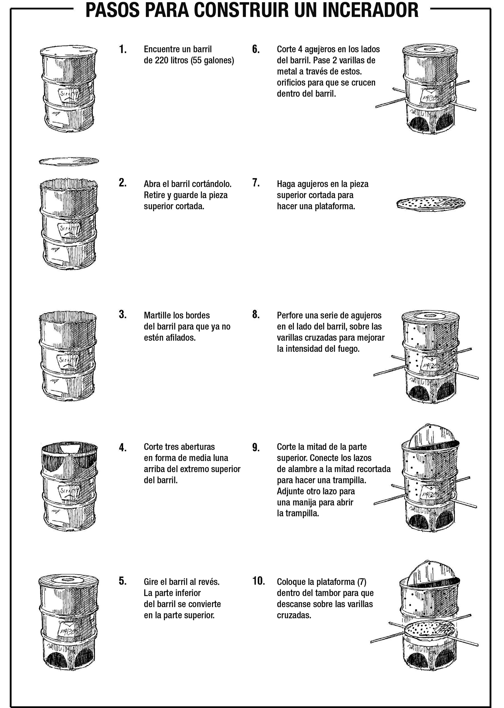

Resumen
- En algunas epidemias, deberá evitar que los gérmenes en artículos (como sábanas y ropa contaminada por los fluidos corporales del paciente) se propaguen a otras personas.
- Esto es especialmente importante cuando se trata de Ébola , fiebre de Marburgo , fiebre de Lassa , peste y viruela del simio .
- Un incinerador puede quemar tales artículos y evitar que la enfermedad se propague a otros.
- No incinere artículos por sí mismo si hay una alternativa disponible, como la incineración en instalaciones de salud.
- Tenga mucho cuidado al construir y usar incineradores, ya que pueden ser peligrosos. Siempre tenga a mano algo para apagar el fuego (por ejemplo, un cubo de agua o arena).
Consejos para construir un incinerador
- Para construir un incinerador, siga las instrucciones en el otro lado de esta tarjeta.
- Mantenga un cubo de agua o arena junto a usted en caso de que necesite apagar el fuego.
- Si nunca ha construido un incinerador antes, pídale ayuda o consejo a un profesional o a alguien que ya lo haya hecho.
- Use ropa protectora, en particular guantes, cuando maneje ropa contaminada u otros artículos que pertenezcan a una persona fallecida. Coloque los artículos con cuidado en el incinerador y déjelos quemar hasta que se conviertan en cenizas, destruyendo todos los gérmenes.
- Dígales a las personas en la comunidad lo que está haciendo para que sepan que deben mantenerse alejados y seguros.
